レベルデザイン基礎 演習 H05
第5回：注意を導く演出
2026-11-26
本日の配布物
H05_GuideAttention.unitypackage（作例 Ex01〜Ex08 のシーン 11 本、入力の設定ファイル H05Controls.inputactions、8 本のスクリプト、Animation・Timeline・Signal のアセット）
前回までの DesignPrinciples2026 プロジェクトをそのまま使います。取り込み方は、このページの 1 章の最初に書いています。
今日は、プレイヤーの目と頭の使い方に合わせて、案内を出す場所・順番・止める時刻・強さを Unity で決めます。全部を目立たせた画面と 1 つだけ目立たせた画面で探す時間を比べたり、案内を Timeline に並べて 1 つずつ出したり、案内を出した所でゲームを止めて、押すと続きが流れる形にしたりします。
同じ日の講義（D05、原理編 第5章「認知と UX」）で聞いた話を、ここでは自分の手で再現します。章は、これまでと同じく三つの層の順に並べています。スライドの作例の番号（Ex01〜Ex08）は Unity で作業しやすい順なので、このページでは配布シーンの名前と一緒に書いています。
0. はじめに：三つの層と、今日の問い
講義 D01（原理編 第1章）では、ゲームのデザインが扱う範囲を三つの層に分けました。
- 体験の層：操作したときの手応えや迷いにくさ
- 情報の層：何を、どんな順番で、どれくらいの強さで見せるか
- 見た目の層：色、形、レイアウト、フォント
前回の H04 では、操作したことにどう応えるかを扱いました。今日はその手前にある、「プレイヤーの注意を、どこへ向けるか」を扱います。問いは 1 つで、「いま見てほしい 1 つを、どうやって見つけてもらうか」です。
講義 D05 で聞いた言葉のうち、今日の作例に出てくるものを先に並べます。
| 言葉 | 意味 | 今日の作例 |
|---|---|---|
| 注意（attention） | 動くもの・明るいものへ向かいやすい、目の性質 | Ex01・Ex07 |
| 強調は引き算 | 全部を目立たせると、何も目立たない。1 つを立てるなら、まわりを静かにする | Ex02・Ex07 |
| ワーキングメモリ（working memory） | 頭の中に置いておける量。一度に覚えられるのは数個で、使う場面の直前に教えるほうが残る | Ex03・Ex04・Ex05 |
| 段階的開示（progressive disclosure） | 状況が必要とする情報だけを出す | Ex06 |
配布シーンの Ex 番号は、Unity で作業しやすい順に付けています。今日はたまたま、層の順と Ex 番号の順がそろっています（準備に Ex01、体験の層に Ex02・Ex03、情報の層に Ex04〜Ex06、見た目の層に Ex07、最後に Ex08）。
1. 準備：取り込み、Timeline の確認、動きを録画する
層の話に入る前に、配布物を取り込み、Timeline が使えることを確かめます。そのあと、後の作例で使う「動き」を、スクリプトを書かずに録画で作ります。
配布物を取り込み、Timeline ウィンドウを開く
配布の unitypackage を、H01 で作った DesignPrinciples2026 プロジェクト（Universal 3D のテンプレート）に取り込みます。H04 と同じ手順です。
手順
- Classroom の課題から
H05_GuideAttention.unitypackageをダウンロードします - Unity で DesignPrinciples2026 プロジェクトを開きます
- メニューバーの Assets → Import Package → Custom Package... をクリックします
- 開いたウィンドウで、ダウンロードした
H05_GuideAttention.unitypackageを選んで開きます - 取り込む中身の一覧が出たら、すべてにチェックが入っていることを確かめ、右下の Import をクリックします
- メニューバーの Window → Sequencing → Timeline をクリックします
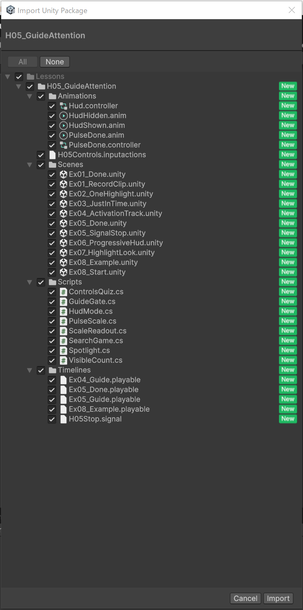
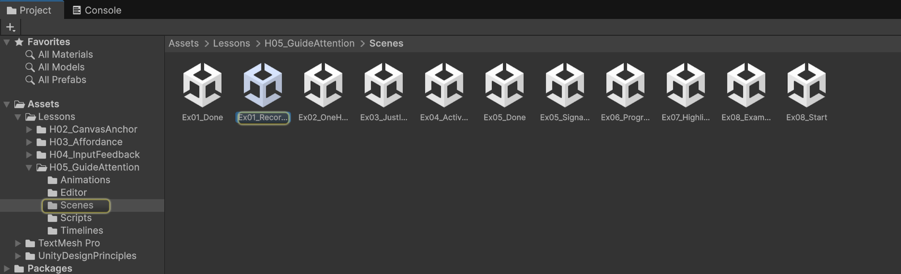
Assets/Lessons/H05_GuideAttention/ に入り、Scenes に 11 のシーンがあります確認：Project ウィンドウの Assets/Lessons/H05_GuideAttention/Scenes に Ex01_RecordClip から Ex08_Start までの 11 のシーンがあり、Timeline ウィンドウが開くことを確認します。開けたら閉じてかまいません。
Window の中に Sequencing が無いときだけ、Timeline のパッケージが入っていません。Window → Package Management → Package Manager を開き、左の Unity Registry をクリックし、一覧から Timeline を選んで Install をクリックします。Universal 3D のテンプレートには最初から入っているので、ほとんどの人は何もしなくて済みます。
シーンを開いて文字が出ないときは、TextMeshPro の部品が足りていません。TMP Importer のウィンドウが出たら Import TMP Essentials をクリックします（H04 で済ませていれば不要です）。
録画で Clip を作り、START を拡縮させる
Assets/Lessons/H05_GuideAttention/Scenes/Ex01_RecordClip.unity ／ Canvas / StartButton
START ボタンが、1 秒に 1 回、少しだけ大きくなって元に戻るようにします。スクリプトは書かず、Animation ウィンドウの録画で動きを作ります。
使うもの
- アニメーションクリップ（Animation Clip）：時間に沿って値が変わる記録です。ここでは Scale が 1 → 1.1 → 1 と変わる記録を作ります
- アニメーターコントローラー（Animator Controller）：どの Clip をいつ流すかを決める表です
- アニメーター（Animator）：動かしたい物に付く部品で、Controller を使って Clip を流します
- Animation ウィンドウ：Clip を録画で作る窓です。Create を押すと、上の 3 つが自動でそろいます
- ScaleReadout.cs：画面の「Scale x…（max …）」を表示するスクリプトです。今日は、max の数字で動きが付いたことを確かめるために使います
手順
- Project ウィンドウで
Assets/Lessons/H05_GuideAttention/Scenes/Ex01_RecordClipをダブルクリックして開きます - Play ボタンを押して、上の表示が「Scale x1.00 (max 1.00)」のまま動かないことを見て、もう一度押して止めます
- Hierarchy で
Canvasの左の三角をクリックして開き、StartButtonをクリックします - メニューバーの Window → Animation → Animation をクリックします
- Animation ウィンドウの中央にある Create ボタンをクリックします
- 保存先を
Assets/Lessons/H05_GuideAttention/Animationsにして、名前にMyPulseと入力し、Save をクリックします。Animations フォルダに MyPulse（Clip）と StartButton（Animator Controller）ができ、StartButton の Inspector に Animator が付きます - Animation ウィンドウ左上の赤い丸（録画ボタン）をクリックします
- ウィンドウ上の目盛りの
0:30をクリックします - Inspector の Rect Transform で、Scale の X に
1.1を入力して Enter を押し、Y にも1.1を入力して Enter を押します - 目盛りの
1:00をクリックします - Inspector の Scale の X と Y を
1に戻します - 赤い丸をもう一度クリックして、録画を止めます
- Play ボタン（Cmd + P、Windows は Ctrl + P）を押し、START が拡大・縮小するのを見てから、もう一度押して止めます
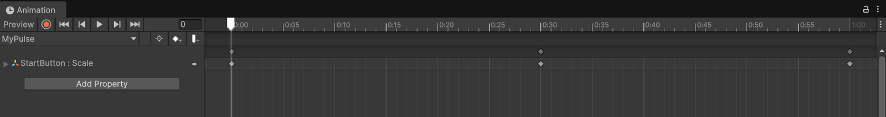
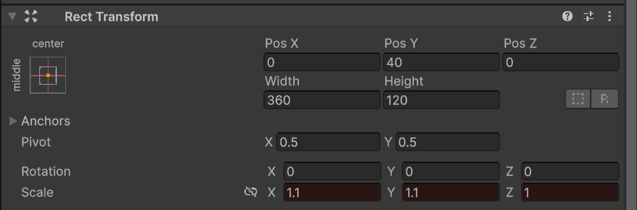
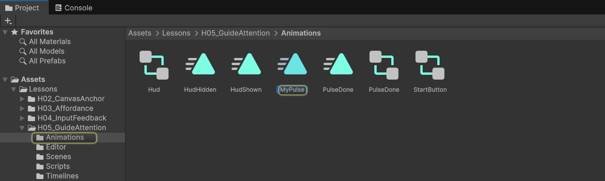
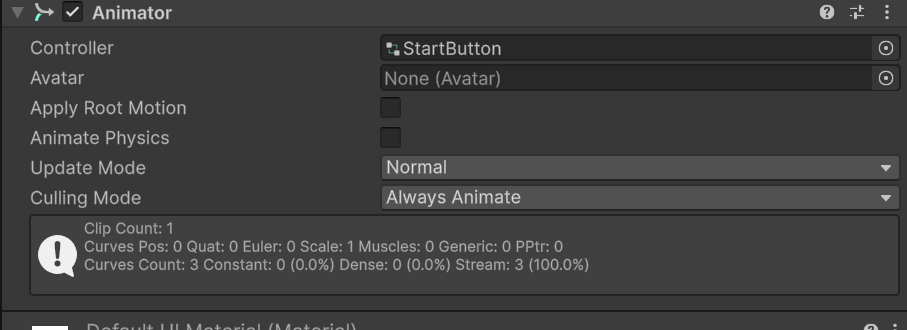
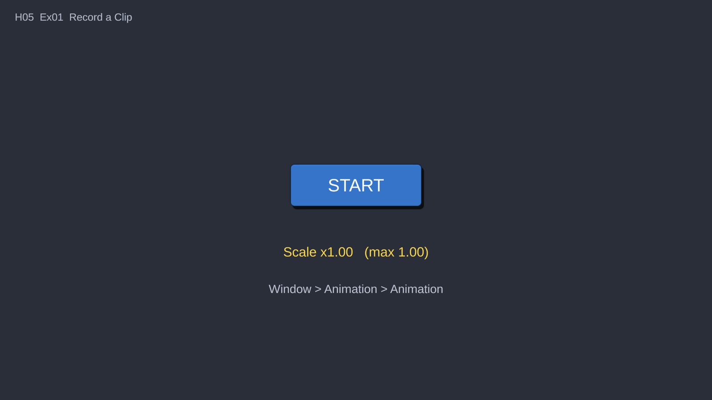
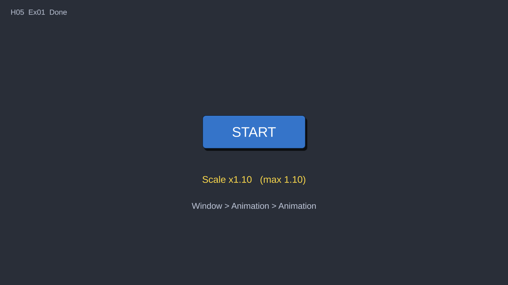
確認：Project に MyPulse と StartButton（Animator Controller）ができ、StartButton に Animator が付きます。Play すると START が 1 秒周期で拡縮し、上の表示が「Scale x1.00 (max 1.00)」から「max 1.10」に変わることを確認します。うまくいかないときは、Ex01_Done を開いて、MyPulse と PulseDone を見比べます。
| 時刻 | Scale | START の幅（元は 360 px） |
|---|---|---|
| 0:00（0 秒） | 1（自動で入る） | 360 px |
| 0:30（0.5 秒） | 1.1 | 396 px |
| 1:00（1 秒） | 1 | 360 px |
0:00 の 1 が自動で入らないときは、目盛りの 0:00 をクリックし、Inspector の Scale を右クリックして Add Key を選びます。
録画は、Play を止めてから行います。録画を止め忘れると、Inspector で動かした位置まで記録されてしまいます。赤い丸をもう一度押して、目盛りの赤が消えたことを確かめてから次へ進みます。
0:30 は「0 秒 30 フレーム」
Animation ウィンドウの目盛りは、「秒:フレーム」の形で書かれています。この Clip は 1 秒が 60 フレームなので、0:30 は 0.5 秒の位置、1:00 は 1 秒の位置です。1 → 1.1 → 1 の往復が 1 秒で終わるので、START は 1 秒に 1 回、拡縮します。
この動きは、あとの Ex07 でスクリプトに置き換えて、大きさと速さを数字で変えます。動くものへ目が向かう性質は、同じことを録画で作るか、スクリプトで作るかの違いだけです。
2. 体験の層：見つけられるか、覚えられるか
ホーム画面のバッジが全部点滅していて、どれを押せばよいか分からない。チュートリアルで操作の説明が 6 つ一度に出て、どれも覚えられない。プレイヤーが困る場面は、この 2 つから始まります。この章では、困り具合を「探す時間」と「間違えた回数」という数字にして、見せ方を変えたときに数字がどう動くかを比べます。
全部が点滅する画面と、1 つだけ点滅する画面を比べる
Assets/Lessons/H05_GuideAttention/Scenes/Ex02_OneHighlight.unity ／ SearchGame
前の作例では、動くと目が向かうことを、START の拡縮で作りました。今度は、動くものが 9 個あったらどうなるかを測ります。上に出た名前（Find）のアイコンを探して押すゲームで、点滅するアイコンを 9 個から 1 個に変えます。
使うもの
- SearchGame.cs：上に出た名前のアイコンを探して押すゲームです。押すまでの秒数を測って、平均（Avg）を出します
- Blink All：オンのときは 9 個すべてが 0.5 秒周期で点滅し、オフのときは探すアイコン 1 個だけが点滅します
- Avg：自分が見つけるまでにかかった秒数の平均です。1 回目は練習なので入りません
手順
- Project ウィンドウで
Scenes/Ex02_OneHighlightをダブルクリックして開きます - Play ボタンを押し、Game ビューを 1 回クリックします
- 画面の上に出た「Find: …」と同じ名前のアイコンを押します。これを 6 回くり返します（1 回目は練習です）
- 上の表示の Avg の数字（例：
Avg 3.12 s）を書き留めます - Play ボタンを押して止めます
- Hierarchy で
SearchGameをクリックします - Inspector の Blink All のチェックを外します
- Play ボタンを押し、Game ビューを 1 回クリックして、同じように 6 回押します
- Avg の数字を書き留め、止めてから、さっきの Avg と見比べます
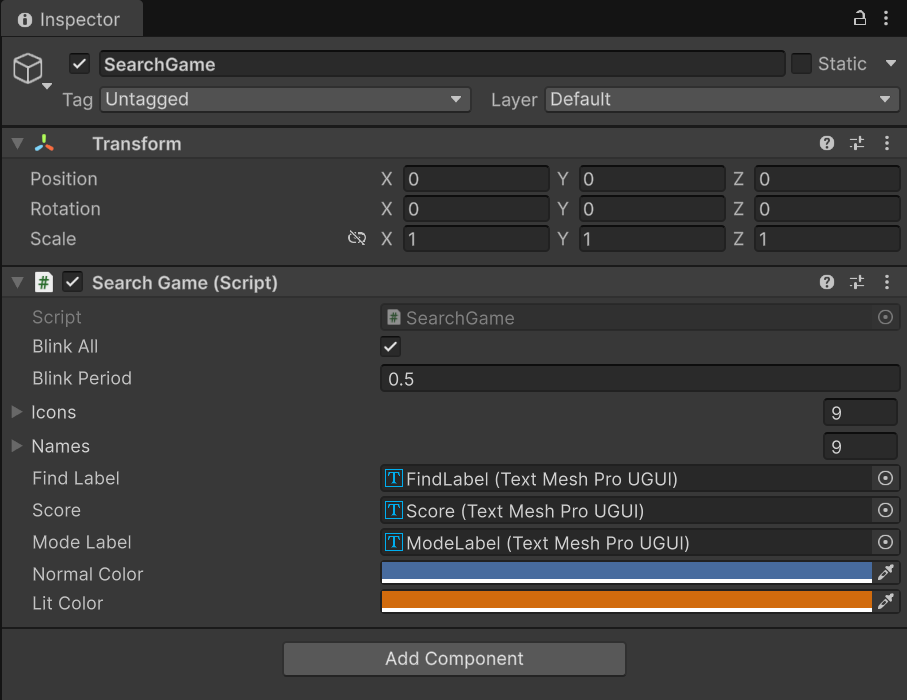
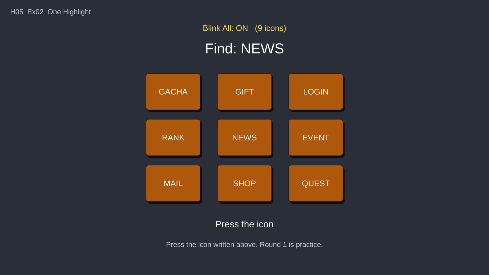
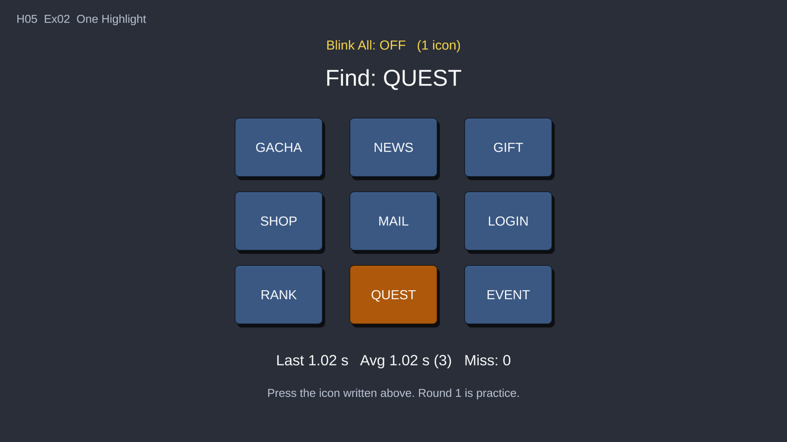
確認：6 回押した後の Avg が、オフのほうが小さくなることを確認します。点滅するアイコンは 9 個から 1 個に変わります。Avg が下がらなかった人は、その数字をそのまま書き留めておきます。
| Blink All | 点滅するアイコン | Avg（自分の値を書く） |
|---|---|---|
| オン | 9 個 | （例：3.12 s） |
| オフ | 1 個 | （例：1.48 s） |
表の 3.12 s と 1.48 s は書き方の例で、自分の画面の値ではありません。Avg は人によって、運によっても変わります。下がらなかったときも、出た数字をそのまま書き、なぜそうなったかをフォームで考えます。
強調は引き算
9 個が同じように点滅していると、目はどれにも向かいにくくなり、名前を 1 つずつ読んで探すことになります。1 個だけが点滅していれば、探す名前を読まなくても、動くものに目が向かいます。強調は、足すほど効くのではなく、まわりを静かにするほど効きます。
ソーシャルゲームのホーム画面で、お知らせもイベントもガチャも同時に光っているのは、全部を見てほしい結果として、どれも見られない状態です。1 つを立てたいなら、残りは動かさないことが、いちばん安い方法です。
6 つを一度に教える画面と、1 つずつ教える画面を比べる
Assets/Lessons/H05_GuideAttention/Scenes/Ex03_JustInTime.unity ／ Player / Controls Quiz
前の作例では、目の探し方を比べました。今度は、頭の覚え方です。6 つの操作とキーの組を、6 つ一度に見せる場合と、1 問ごとに 1 つだけ見せる場合で、押し間違い（Miss）がどう変わるかを比べます。
使うもの
- ControlsQuiz.cs：6 つの操作（JUMP・ATTACK・GUARD・HEAL・DASH・MAP）に対応するキーを覚えて、聞かれたキーを押すクイズです。押し間違いを数えます
- Player Input と H05Controls：6 つのキーを、操作の名前（アクション）に結び付けています。H04 で見た仕組みと同じです
- Teach All：オンのときは、START の後に 6 つを 6 秒間まとめて見せます。オフのときは、1 問ごとにその 1 つだけを 1.5 秒見せてから聞きます
- Miss：押し間違えた数です。「Miss: 2 / 6」のように、6 問のうちの数で出ます
手順
- Project ウィンドウで
Scenes/Ex03_JustInTimeをダブルクリックして開きます - Play ボタンを押します
- Game ビューの START ボタンをクリックします（キーが届く状態にもなります）
- 出てきた 6 行（操作 = キー）を、6 秒の間に覚えます
- 「JUMP !」のように出た操作のキーを、キーボードで 1 回押します。これを 6 問くり返します（間違えても次の問題へ進みます）
- 上の表示の Miss の数字（例：
Miss: 2 / 6）を書き留め、Play ボタンを押して止めます - Hierarchy で
Playerをクリックします - Inspector の Controls Quiz の Teach All のチェックを外します
- Play ボタンを押し、START をクリックして、同じように 6 問に答えます
- Miss の数字を書き留め、止めてから、さっきの Miss と見比べます
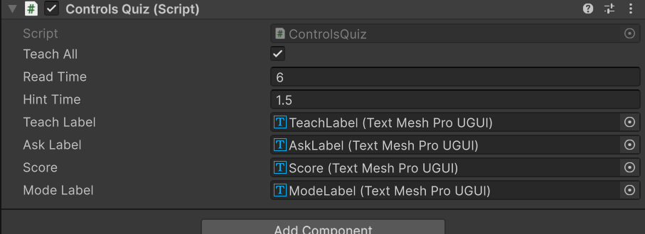
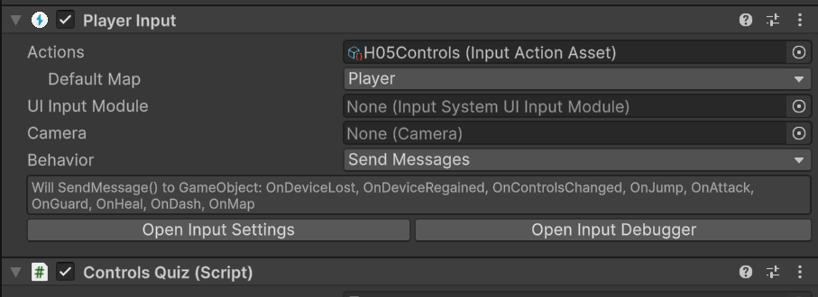
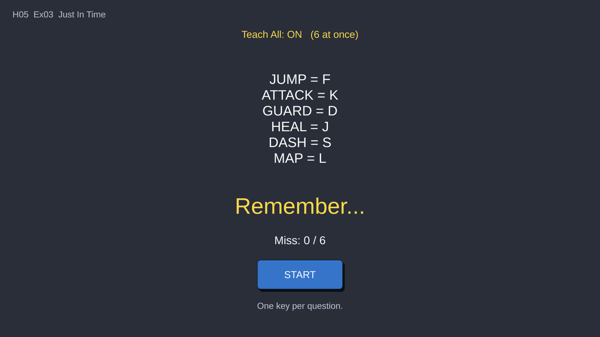
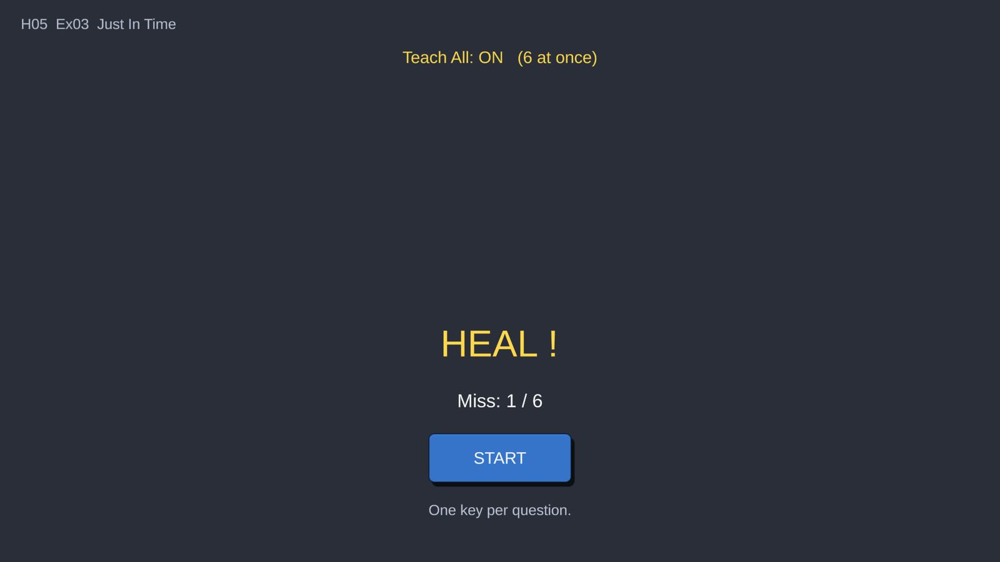
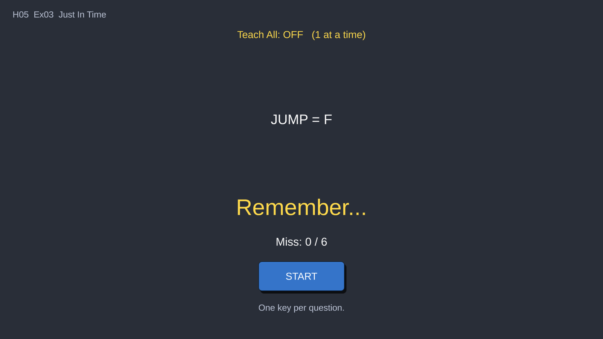
確認：6 問が終わった後の Miss が、オフのほうで小さくなることを確認します。オフでは、1 問ごとに 1 行だけが出ます。キーが効かないときは、Game ビューを 1 回クリックしてから押します。
| Teach All | 見せ方 | Miss（自分の値を書く） |
|---|---|---|
| オン | 6 つを一度に、6 秒 | （n / 6） |
| オフ | 1 問ごとに 1 つを、1.5 秒 | （n / 6） |
使う場面の直前に教える
人が頭の中に置いておけるものの数は多くありません。コーワン（Cowan、2001）は、一度に保てるのは平均で 4 つ前後だと論じています。ミラー（Miller、1956）の「7±2」は、これより少しゆるい言い回しだとされています。6 つを一度に教えると、後ろのほうは、聞かれる頃には残っていません。
1 つずつ、その操作を使う直前に教えれば、覚えておく必要がなくなります。多くのゲームのチュートリアルが、操作を一度にまとめて並べず、最初の敵の前で攻撃、扉の前でインタラクトと、場面ごとに分けて教えるのも、同じ理由によると考えられます。次の章では、この「場面ごとに 1 つずつ」を Timeline で作ります。
3. 情報の層：順番と、止まる所と、出し入れ
前の章で、一度に教える量を減らすと数字が良くなることを確かめました。この章では、案内を 1 つずつ出す仕組みを Timeline で作ります。さらに、案内が読まれないまま消えてしまう問題を、Signal で止めて直し、最後に、いま要らない情報（HUD）を隠します。
3 つの案内を 1 つずつ出す（Activation Track）
Assets/Lessons/H05_GuideAttention/Scenes/Ex04_ActivationTrack.unity ／ Guide / Timeline
前の作例の「1 つずつ」を、ここでは画面の案内で作ります。冒険の画面に、CHEST・KEY・DOOR の 3 つの案内（Guide_1〜3）があります。教えるボタンは、黄色い枠で囲まれます。最初は 3 つが同時に出るので、Timeline で、1 つずつ順に出るように直します。
使うもの
- タイムライン（Timeline）：時間の順に、物を出したり動かしたりする仕組みです。ウィンドウ上で、時間に沿って帯を並べて作ります
- トラック（Track）：1 つの物を担当する行です。今日は、物を出し入れする Activation Track だけを使います
- クリップ（Clip）：トラックの上に置く、出す時間の帯です。Start（始まる秒）と Duration（出ている秒数）を持ちます
- プレイアブルディレクター（Playable Director）：Timeline を再生する部品です。Guide に付いています
- バインド（Bind）：トラックに「どの物を担当するか」を結び付けることです。Ex04 では、配布のシーンで済んでいます
- VisibleCount.cs：いま出ている案内の数（Visible）と、同時に出た最大の数（Max）を表示します
手順
- Project ウィンドウで
Scenes/Ex04_ActivationTrackをダブルクリックして開きます - Play ボタンを押し、3 つの案内が同時に出ること、上の表示が
Max: 3になることを見て、もう一度押して止めます - Hierarchy で
Guideをクリックします - メニューバーの Window → Sequencing → Timeline をクリックして、Timeline ウィンドウを開きます
- Timeline ウィンドウの右上にある鍵のアイコンをクリックして、ロックします（ほかを選んでも表示が消えなくなります）
- Timeline の目盛りは、最初は「フレーム」で出ています（0〜360、60 フレームで 1 秒）。秒で見たいときは、ウィンドウ右上の歯車（⚙）をクリックし、並ぶ Frames・Timecode・Seconds のうち Seconds を選びます
- Guide_1 のトラックの帯（クリップ）をクリックします
- Inspector の Clip Timing の Duration の s の欄に
2を入力し、Enter を押します（f の欄は 120 に変わります） - Guide_2 のクリップをクリックし、Start の s の欄に
2、Duration の s の欄に2を入力します - Guide_3 のクリップをクリックし、Start の s の欄に
4、Duration の s の欄に2を入力します - Timeline ウィンドウの再生ヘッド（時間の目盛りの上のつまみ）を左右にドラッグして、Game ビューで案内が入れ替わるのを見ます
- Cmd + S（Windows は Ctrl + S）で保存します
- Play ボタンを押し、上の表示が
Max: 1になることを確かめ、止めます
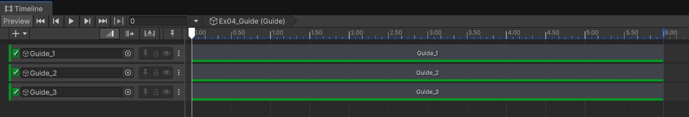
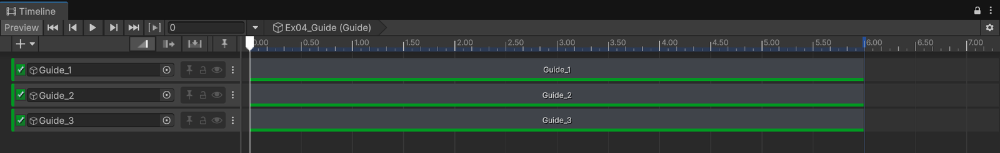
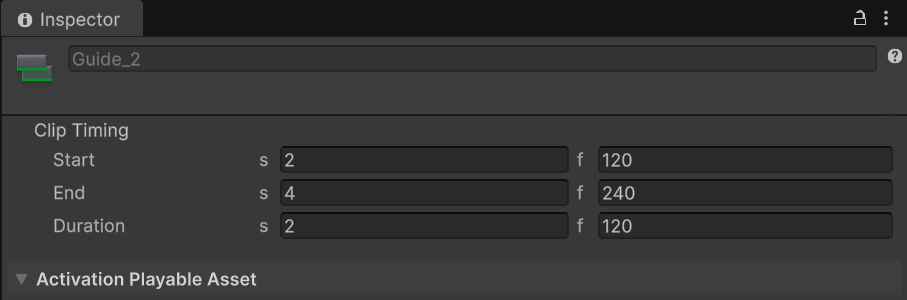
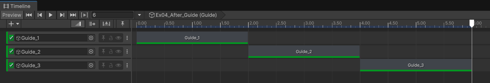
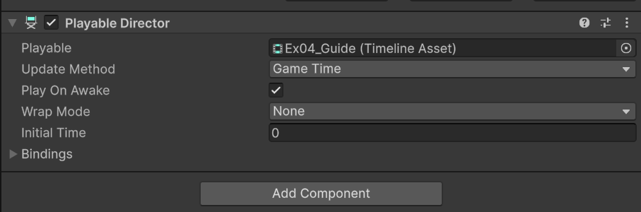
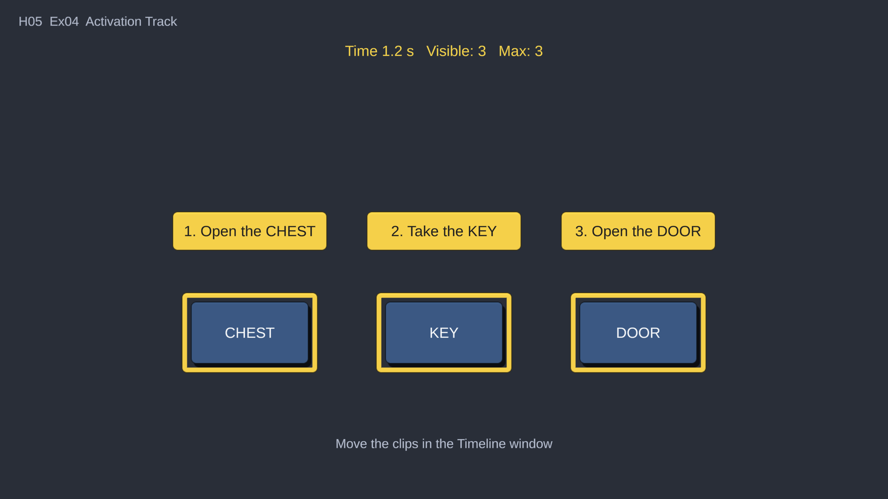
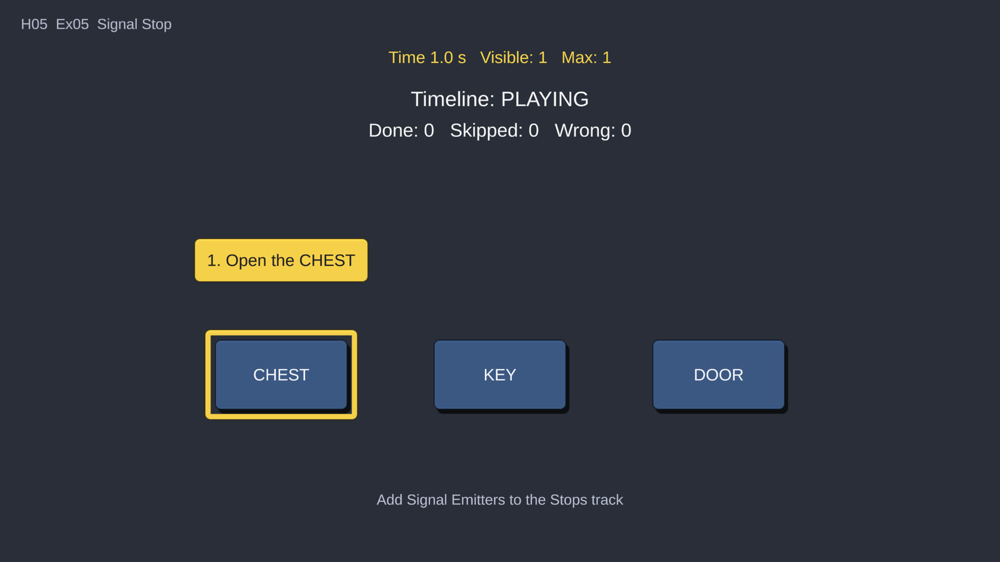
確認：3 つのクリップが 0〜2 秒、2〜4 秒、4〜6 秒と階段状に並び、Play すると案内が 1 つずつ順に出て、上の表示が Max: 3 から Max: 1 になることを確認します。
| 案内 | 変更前の Start | 変更前の Duration | 変更後の Start | 変更後の Duration |
|---|---|---|---|---|
| Guide_1 | 0 | 6 | 0 | 2 |
| Guide_2 | 0 | 6 | 2 | 2 |
| Guide_3 | 0 | 6 | 4 | 2 |
| 同時に出る数（Max） | 3 | 1 | ||
Clip Timing の Start・End・Duration には、s と f の 2 つの欄があります。s は秒、f はフレームで、どちらかを変えるともう一方も変わります。このページでは s の欄に入れます。クリップの真ん中をドラッグすると Start が、右端をドラッグすると Duration が変わります。ドラッグでも作れますが、Inspector に数字を入れると、1 コマ単位のずれがなくなります。値を入力したら Enter で確定します。
Timeline ウィンドウに何も出ないときは、Hierarchy で Guide を選んでいるか、鍵（ロック）が外れていないかを見ます。
案内は、時間をずらして 1 つずつ
Start を 0・2・4 にずらすと、同時に出る数が 3 から 1 に減ります。Duration を 2 にすると、次の案内が始まる前に前の案内が終わるので、重なりません。前の章で、一度に教えるのはひとつ、が良い数字になることを確かめました。Timeline は、それを時間の上に並べる道具です。
案内を出した所でゲームを止める（Signal）
Assets/Lessons/H05_GuideAttention/Scenes/Ex05_SignalStop.unity ／ Guide / Timeline の Signal Receiver のトラック
前の作例の Timeline は、案内を 2 秒ずつ出して消します。読むのが遅い人は、読み終える前に消えてしまいます。今度は、Ex04 の変更後と同じ Timeline に、案内が出たところで止まり、正しいボタンを押すと続きが流れる仕組みを足します。
使うもの
- シグナルエミッター（Signal Emitter）：Timeline の上に置く印です。再生がそこに届くと、決めた名前の合図（Signal）を出します
- シグナルレシーバー（Signal Receiver）：合図を受け取って、決めた処理を呼ぶ部品です。Guide に付いていて、H05Stop の合図を GuideGate の Wait につないであります
- Signal Receiver のトラック：エミッターを置くための Signal Track です。Timeline のいちばん下の行で、見出しは「Guide (Signal Receiver)」と表示されます。配布のシーンでは作成時に「Stops」と名前を付けてあるので、Game ビューの文字（Add Signal Emitters to the Stops track）の「Stops track」は、この行のことです
- GuideGate.cs：Wait() が Timeline を止め、Answer() が正しいボタンのときに続きを流します。読まれないまま消えた案内は Skipped として数えます。中身は 5 章で読みます
- Timeline の再生
- →
- Signal Emitter の印
- →
- Signal Receiver
- →
GuideGate.Wait（止める）- →
- ボタンを押す
- →
GuideGate.Answer（続きを流す）
手順
- Project ウィンドウで
Scenes/Ex05_SignalStopをダブルクリックして開きます - Play ボタンを押し、何も押さずに 7 秒待ちます
- 上の表示が
Done: 0 Skipped: 3になることを確かめ、もう一度押して止めます - Hierarchy で
Guideをクリックします - Inspector の Signal Receiver に、
H05StopとGuideGate.Waitが登録されていることを見ます - メニューバーの Window → Sequencing → Timeline をクリックし、右上の鍵（ロック）をクリックします
- Signal Receiver のトラック（いちばん下の「Guide (Signal Receiver)」の行）の 1.5 秒あたりを右クリックし、Add Signal Emitter を選びます
- 置かれた印をクリックします
- Inspector の Time の s の欄に
1.5を入力して Enter を押し（f の欄は 90 に変わります）、Emit Signal の欄からH05Stopを選びます - 同じトラックの 3.5 秒あたりを右クリックし、Add Signal Emitter を選んで、同じように Time を
3.5、Emit Signal をH05Stopにします - 5.5 秒にも同じように置き、Time を
5.5、Emit Signal をH05Stopにします - Cmd + S（Windows は Ctrl + S）で保存します
- Play ボタンを押し、表示が「Timeline: WAITING for your click」に変わり、案内が出たまま止まるのを見ます
- 止まっている案内に合うボタン（案内が「1. Open the CHEST」なら CHEST）をクリックします
- 2 つ目、3 つ目も同じように押して、上の表示が
Done: 3 Skipped: 0になるのを確かめます
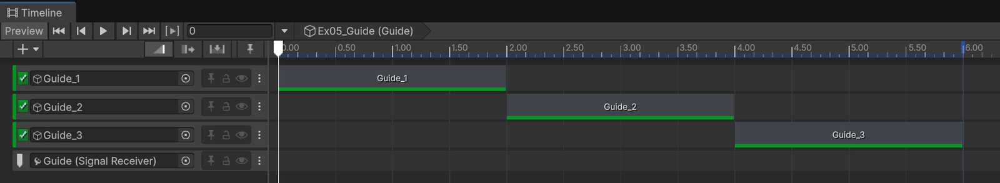
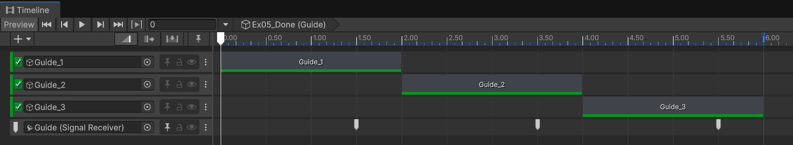
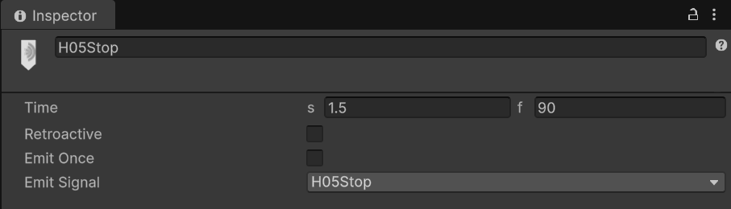
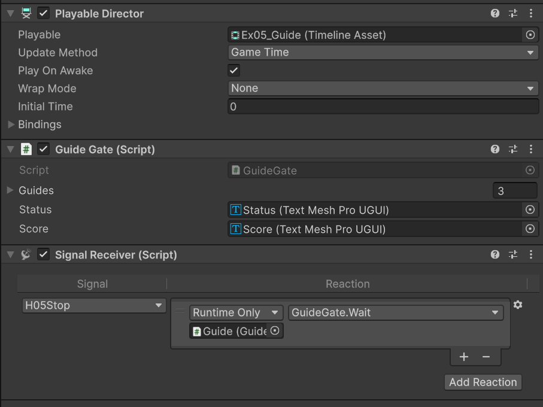
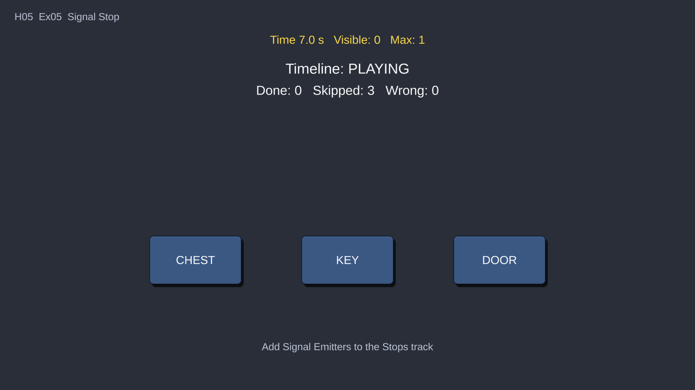
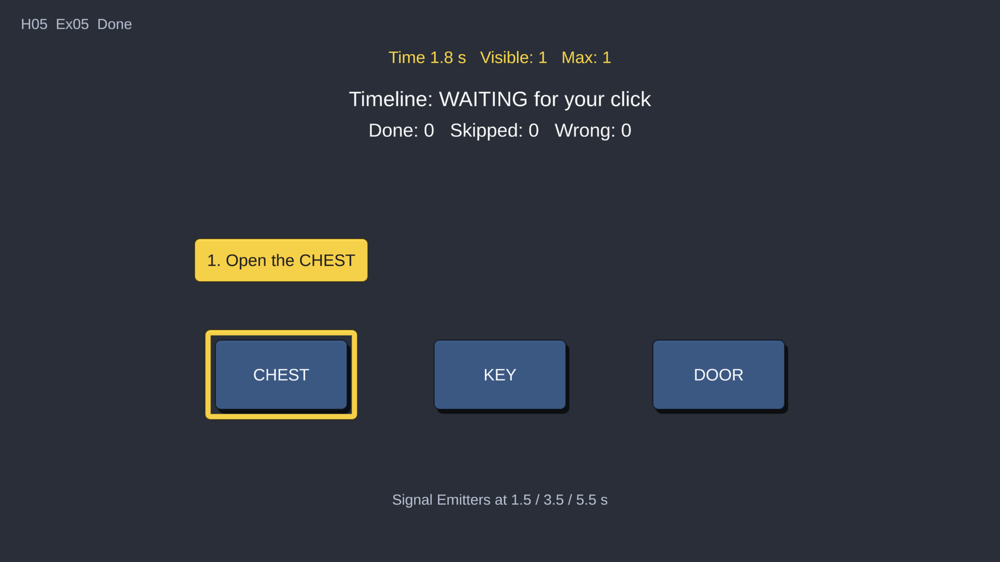
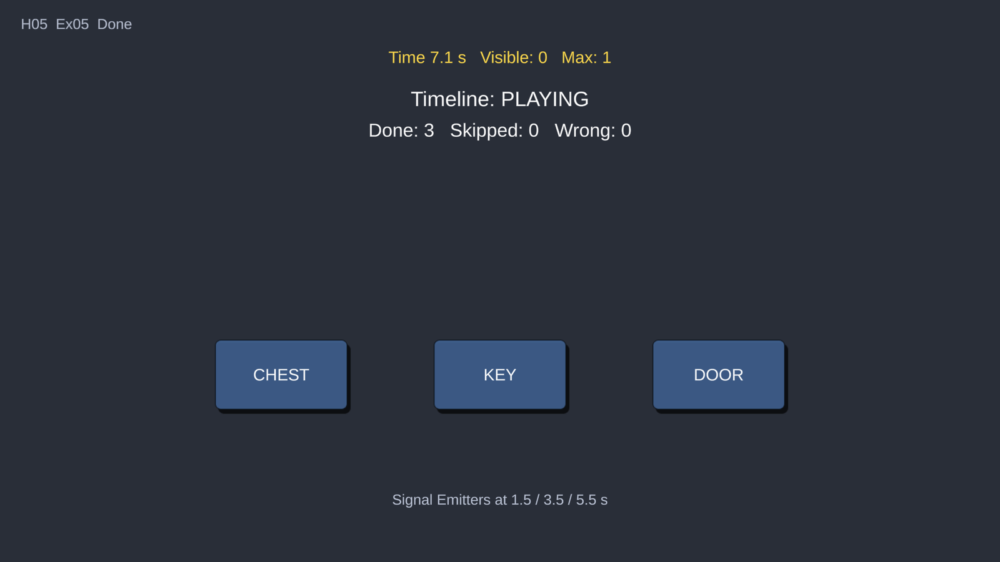
確認：何も押さないと Done: 0 Skipped: 3 になります。Signal Emitter を 3 つ置いて Play すると、案内が出たところで WAITING になり、正しいボタンを押すと続きが流れて、最後に Done: 3 Skipped: 0 になります。違うボタンを押すと、Wrong が増えます。
止まらないときは、印の Emit Signal が H05Stop になっているか、Time が合っているかを見ます。見比べたいときは Ex05_Done を開きます。
提出するスクリーンショット ① を撮るのは、3 つの印が Signal Receiver のトラックに並んだまま Play して、表示が Done: 3 Skipped: 0 になった後です。Timeline ウィンドウと Game ビューが 1 枚に写るように、エディタ全体を撮ります。Title が「H05 Ex05 Signal Stop」であることも確かめます（Ex05_Done の画面は 0 点です）。
1.5 秒に置く理由と、置く時刻を変えるとどうなるか
Guide_1 は 0 秒から 2 秒まで出ています。印を 1.5 秒に置いたのは、案内が終わる 0.5 秒前です。ここで止めると、案内は出たまま止まり、正しいボタンを押した後は、残りの 0.5 秒が過ぎると次の案内が出ます。
止まっている間は、押すまで案内が出続けるので、読む時間は印の位置では変わりません。変わるのは、押した後です。早く止めるほど、正しいボタンを押した後に案内が残る時間が長く、次の案内までの待ちが長くなります。
| 1 つ目の印の Time | 止まる位置 | 押した後、次の案内までの待ち |
|---|---|---|
| 0.2 秒 | 案内が出てすぐ | 1.8 秒 |
| 1 秒 | 案内の真ん中 | 1 秒 |
| 1.5 秒（配布の値） | 終わる 0.5 秒前 | 0.5 秒 |
| 1.9 秒 | 終わる 0.1 秒前 | 0.1 秒 |
待ちは、案内の終わる 2 秒から印の Time を引いた値です。0.2 秒に置くと、押した後に案内が 1.8 秒も出たまま残り、次の案内がなかなか出ません。ゲームのテンポが悪くなります。逆に終わりぎわの 1.9 秒に置くと、PC が遅くて 1 フレームが長引いたとき、止まる前に次の案内へ進んでしまうことがあります。1.5 秒は、その両方を避ける値です。
Time を 0.2 にして試すときは、1 つ目の印の Time だけを変えて、押した後に案内がどれだけ残るかを見ます。変えたら、元の 1.5 に戻してから提出用のスクリーンショットを撮ります。
いま要らない HUD を隠す
Assets/Lessons/H05_GuideAttention/Scenes/Ex06_ProgressiveHud.unity ／ HudMode / Hud
前の作例では、案内を「いつ出すか」を決めました。今度は、案内ではなく、画面に出しっぱなしの情報（HUD）を、状況に合わせて出し入れします。探索中は体力・弾数・ミニマップ・スキルが全部出ていますが、戦っていないときに弾数は要りません。
使うもの
- HUD：体力・弾数・ミニマップ・スキルのように、プレイ中に出しっぱなしにする情報の画面です
- HudMode.cs：EXPLORE（探索）と BATTLE（戦闘）を切り替え、Hide In Explore がオンのときは、探索中の HUD を隠します
- Hide In Explore：探索中に HUD を隠すかどうかのチェックです。最初はオフです
- Animator：Hud に付いています。Visible という値で、Shown（出ている）と Hidden（隠れている）の状態を行き来します
- HUD Alpha：HUD の透明度の数字です。1 が見える、0 が見えない状態です
手順
- Project ウィンドウで
Scenes/Ex06_ProgressiveHudをダブルクリックして開きます - Play ボタンを押し、画面の BATTLE ボタンを何度かクリックして、探索中も HUD が出たままなのを見ます
- 上の表示が、EXPLORE のとき
HUD Alpha 1.00であることを見て、もう一度 Play を押して止めます - Hierarchy で
HudModeをクリックします - Inspector の Hide In Explore のチェックを入れます
- Play ボタンを押し、EXPLORE のとき HUD が消えて
HUD Alpha 0.00になることを見ます - BATTLE ボタンをクリックし、HUD が現れて
HUD Alpha 1.00になることを見ます（ボタンは BACK TO EXPLORE に変わります。もう一度押すと EXPLORE に戻ります） - Play ボタンを押して止めます
- メニューバーの Window → Animation → Animator をクリックします
- Hierarchy で
Hudをクリックし、Play ボタンを押して BATTLE を押し、Shown と Hidden の枠の間を行き来する様子を見ます
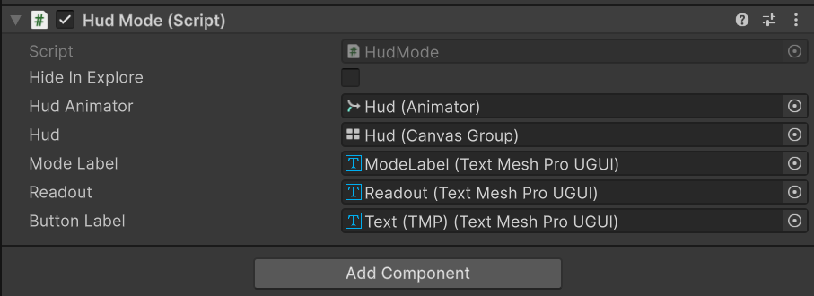
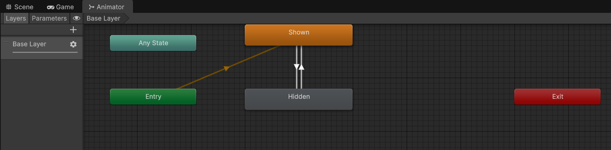
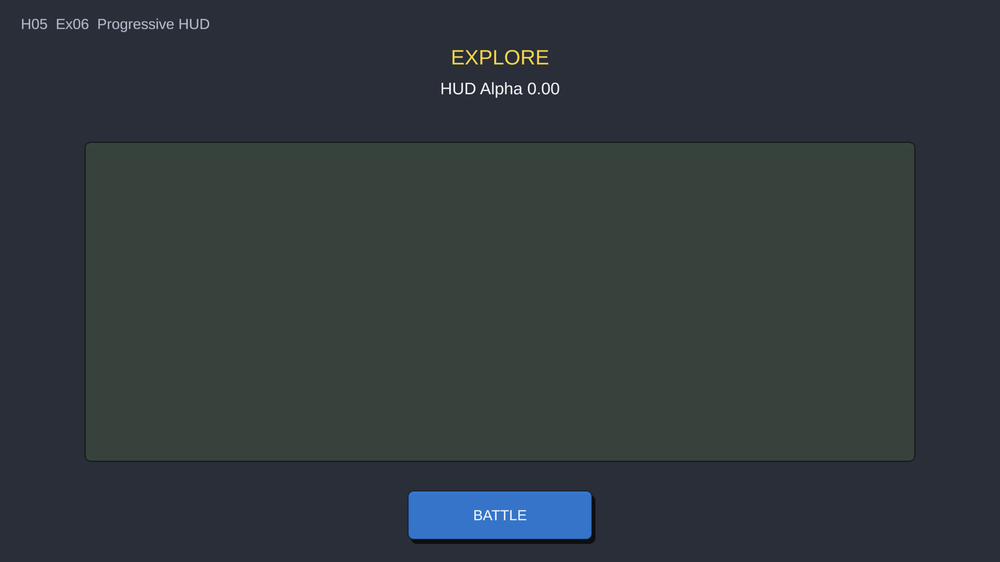
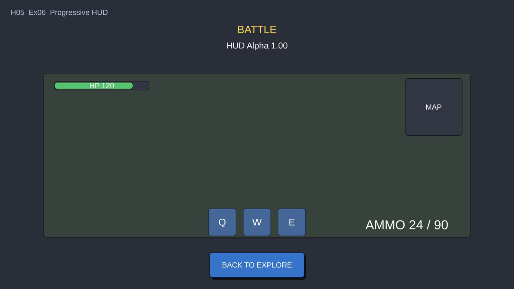
確認：Hide In Explore をオンにすると、EXPLORE の HUD Alpha が 1.00 から 0.00 になり、BATTLE のときは 1.00 のままです。Animator ウィンドウで、Shown と Hidden の状態が BATTLE の切り替えに合わせて動くことも確認します。
| Hide In Explore | EXPLORE の HUD Alpha | BATTLE の HUD Alpha |
|---|---|---|
| オフ | 1.00 | 1.00 |
| オン | 0.00 | 1.00 |
段階的開示：出すより、引っ込める
HUD の数字は、見る必要がないときも画面にあって、目の注意と頭の置き場所を取ります。探索中に弾数が見えていても、プレイヤーにできることはありません。いま必要な情報だけを出し、要らなくなったら引っ込めるのが、段階的開示です。
この作例では、出し入れの切り替えを、スクリプトではなく Animator に任せています。HudMode は「見せるか」を Visible に入れるだけで、実際に HUD を出し入れする動きは、Hud.controller の中にあります。1 章で作った Animation Clip と同じ仕組みが、ここでも働いています。
4. 見た目の層：暗さと動きの大きさ
案内が出る順番と止まる所を決めたら、最後に、その案内がどれくらい強く見えるかを決めます。強すぎるとうるさく、弱すぎると見逃されます。この章では、まわりを暗くする量（Dim）と、動きの大きさ（Max Scale）と速さ（Period）の 3 つの数字を変えて、目立ち方を比べます。
QUEST だけを立てる
Assets/Lessons/H05_GuideAttention/Scenes/Ex07_HighlightLook.unity ／ Spotlight、Canvas / Icon_4（QUEST）
Ex02 と同じ、9 個のアイコンの格子です。今度は点滅ではなく、中央の QUEST だけが拡縮します。まず、大きく速い動きを見て、次に、まわりを暗くして、動きを小さくゆっくりにします。
使うもの
- PulseScale.cs：物の大きさを、1 → Max Scale → 1 と、Period 秒で 1 回、くり返し変えるスクリプトです。Ex01 の録画で作った動きを、数字で調整できる形にしたものです
- Spotlight.cs：QUEST のまわりを 4 枚の黒い板で覆って、暗くします
- Dim：まわりを覆う黒の濃さです。0 は何もしない、1 は真っ黒です
- Max Scale：いちばん大きくなったときの倍率です
- Period：拡縮 1 回にかかる秒数です
手順
- Project ウィンドウで
Scenes/Ex07_HighlightLookをダブルクリックして開きます - Play ボタンを押し、中央の QUEST が大きく速く拡縮するのを見ます
- 上の表示（
Dim 0.00 Scale x1.30 Period 0.60 s）を書き留め、もう一度押して止めます - Hierarchy で
Spotlightをクリックします - Inspector の Dim に
0.6を入力し、Enter を押します - Play ボタンを押し、まわりが暗くなって QUEST だけが明るく残ることを見て、止めます
- Hierarchy で
Canvasの左の三角をクリックして開き、Icon_4をクリックします（QUEST のアイコンです） - Inspector の Pulse Scale の Max Scale に
1.05、Period に2を入力して、それぞれ Enter を押します - Play ボタンを押し、動きが小さくゆっくりになったのを見て、表示（
Dim 0.60 Scale x1.05 Period 2.00 s）を書き留めます。止めます - Dim・Max Scale・Period を、1.05 / 2 / 0.6 以外の、自分で決めた組にして Play し、見え方を書き留めます
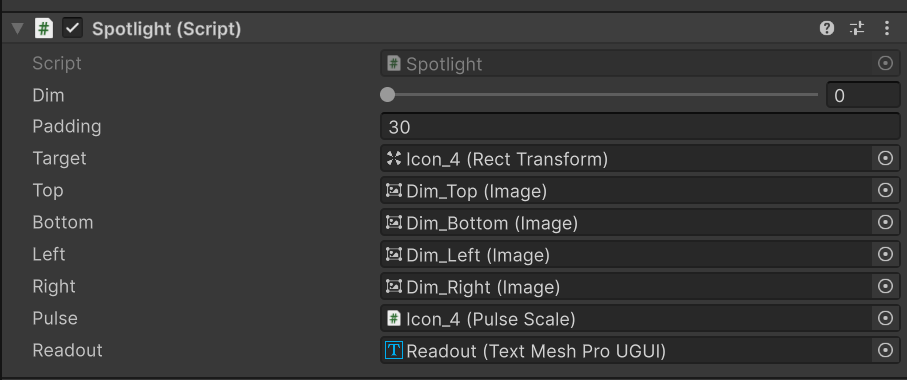
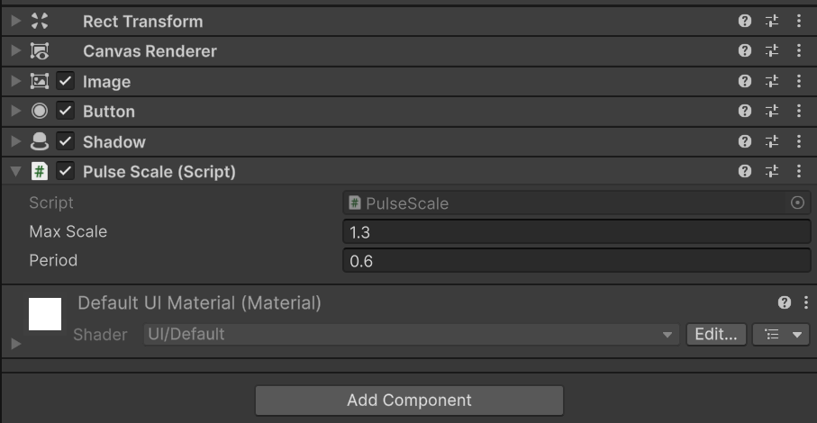
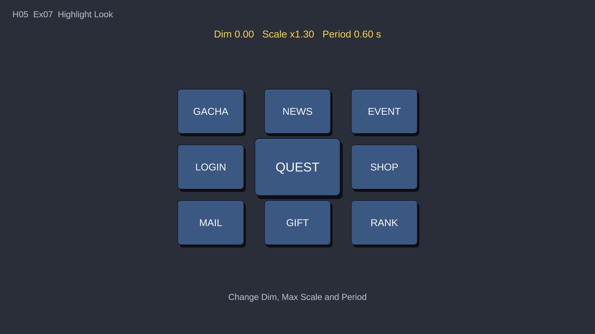
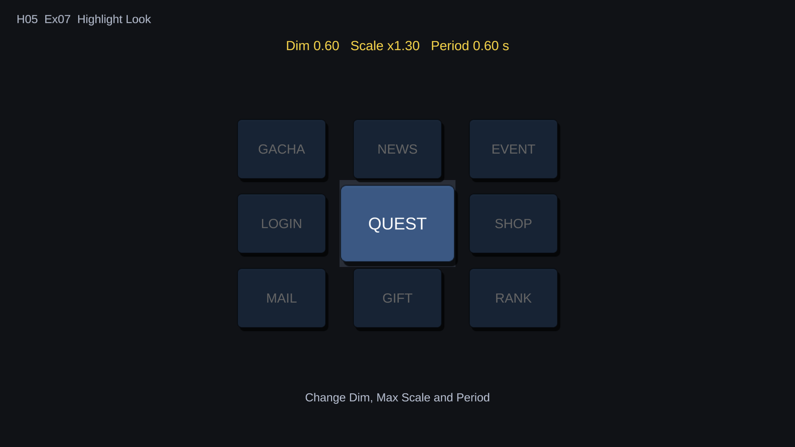
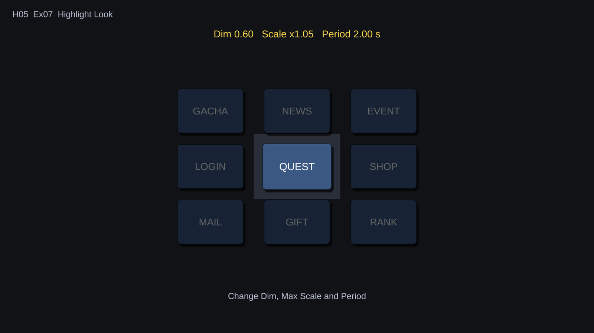
確認：Dim を 0.6 にするとまわりが暗くなって QUEST だけが残り、Max Scale 1.05・Period 2 にすると、動きが小さくゆっくりになることを確認します。表示の数字（Dim 0.60 Scale x1.05 Period 2.00 s）が、Inspector に入れた値と合っています。
| 状態 | Dim | Max Scale | Period | QUEST の幅（元は 220 px） |
|---|---|---|---|---|
| 変更前 | 0 | 1.3 | 0.6 s | 220 → 286 px（66 px 増える） |
| 変更後 | 0.6 | 1.05 | 2 s | 220 → 231 px（11 px 増える） |
| 自分で決めた組 | （自分の値と、見え方を書く） | |||
大きく速い動きは、目を引くがうるさい
Max Scale 1.3・Period 0.6 秒の動きは、目を強く引きます。ただ、ホームのように何度も見る画面では、同じ動きを見続けることになり、やがてうるさく感じます。Max Scale 1.05・Period 2 秒の動きは、小さくゆっくりですが、Dim で QUEST 以外を暗くしてあれば、それでも目に入ります。まわりを静かにするほど、動きは小さくて足ります。
Dim 0.6 は、まわりに黒を 6 割かぶせるので、もとの明るさの 4 割ほどが残ります。Dim を上げすぎると、画面全体が見えにくくなります。暗さと動きは、どちらか一方を強くするのではなく、組み合わせで決めます。
PulseScale の 1 周の中身
PulseScale は、時間に合わせて 0 → 1 → 0 と往復する値 t を作り、1 と Max Scale の間を t で動かしています。1 周の途中の値は、次のようになります。
| 経過 | t | 倍率（Max Scale 1.3） | 倍率（Max Scale 1.05） |
|---|---|---|---|
| 0（1 周の始まり） | 0 | 1.00 | 1.00 |
| Period の 4 分の 1 | 0.5 | 1.15 | 1.025 |
| Period の半分（頂点） | 1 | 1.30 | 1.05 |
| Period（1 周） | 0 | 1.00 | 1.00 |
頂点に届くのは、Period 0.6 秒なら 0.3 秒後、Period 2 秒なら 1 秒後です。同じ大きさの動きでも、Period が長いほど、頂点までゆっくり向かいます。
穴の余白 30 px の理由
Spotlight の穴は、QUEST の大きさに、余白（Padding）30 px を足した枠です。QUEST が 1.3 倍に膨らむと、幅は 220 → 286 px で、片側 33 px、高さは 150 → 195 px で、片側 22.5 px はみ出します。余白 30 px は、その分をほぼ覆う値で、膨らんだ QUEST が暗い板の下に隠れません。
5. スクリプトを読む
今日の作例は、Timeline と Animator の設定で作れる所が多く、スクリプトは短くて済んでいます。8 本のうち、授業で全文を読むのは GuideGate.cs（案内を止めて続ける仕組み）と PulseScale.cs（拡縮の仕組み）の 2 本です。ほかの 6 本は、折りたたんでありますので、授業のあとで、コメントを手がかりに読んでみましょう。
どのスクリプトも配布物に入っているので、書き写す必要はありません。ここに載せているのは、配布物と同じ内容です。
GuideGate.cs：案内を止めて続ける
Assets/Lessons/H05_GuideAttention/Scripts/GuideGate.cs ／ Ex05・Ex08
Signal Receiver から呼ばれて Timeline を止め、ボタンから呼ばれて続きを流します。いま出ている案内の番号を探す所と、答えられずに消えた案内を数える所が、仕組みの中心です。
using TMPro;
using UnityEngine;
using UnityEngine.Playables;
/// 段階的な案内の「止める・続ける」。
/// - Wait() : Signal Receiver から呼ばれる。いまの案内がまだ終わっていなければ Timeline を止める
/// - Answer(n) : ボタンから呼ばれる。いまの案内（0 から数える）と合っていれば Timeline を続ける
[RequireComponent(typeof(PlayableDirector))]
public class GuideGate : MonoBehaviour
{
public GameObject[] guides;
public TMP_Text status;
public TMP_Text score;
PlayableDirector _director;
bool[] _shown, _done;
bool _waiting;
int _doneCount, _skipped, _wrong;
public bool Waiting => _waiting;
void Awake()
{
_director = GetComponent<PlayableDirector>();
_shown = new bool[guides.Length];
_done = new bool[guides.Length];
Refresh();
}
public void Wait()
{
int i = Current();
if (i < 0 || _done[i])
return;
_director.Pause();
_waiting = true;
Refresh();
}
public void Answer(int index)
{
if (index == Current() && !_done[index])
{
_done[index] = true;
_doneCount++;
if (_waiting)
{
_waiting = false;
_director.Resume();
}
}
else
_wrong++;
Refresh();
}
void LateUpdate() // 操作されないまま消えた案内を数える
{
for (int i = 0; i < guides.Length; i++)
{
bool active = guides[i].activeSelf;
if (_shown[i] && !active && !_done[i])
{
_skipped++;
Refresh();
}
_shown[i] = active;
}
}
int Current()
{
for (int i = 0; i < guides.Length; i++)
if (guides[i].activeSelf)
return i;
return -1;
}
void Refresh()
{
status.text = _waiting ? "Timeline: WAITING for your click" : "Timeline: PLAYING";
score.SetText("Done: {0} Skipped: {1} Wrong: {2}", _doneCount, _skipped, _wrong);
}
}| 行 | していること |
|---|---|
| 8 | [RequireComponent(typeof(PlayableDirector))]：同じ GameObject に Playable Director を必ず付けます。止めたり続けたりする相手が、Timeline を再生している Director だからです |
| 11〜13 | Inspector で結ぶ 3 つです。guides は案内（Guide_1〜3）の並び、status は「PLAYING / WAITING」の文字、score は Done・Skipped・Wrong の文字です |
| 15〜18 | 内部の記録です。案内ごとに「出たことがあるか（_shown）」「答えたか（_done）」、いま止まっているか（_waiting）、3 つの数（_doneCount・_skipped・_wrong）を持ちます |
| 22〜28 | Awake：最初に 1 回だけ呼ばれ、Director を取り出し、記録の配列を案内の数だけ作ります |
| 30〜38 | Wait()：Signal Receiver から呼ばれます。いま出ている案内がない、または答え済みなら何もしません。そうでなければ Pause() で Timeline を止め、_waiting を立てます |
| 40〜55 | Answer(index)：ボタンから、案内の番号つきで呼ばれます。いまの案内と合っていて、まだ答えていなければ Done を増やし、止まっていれば Resume() で続けます。合っていなければ Wrong を増やします |
| 57〜69 | LateUpdate：毎フレーム、案内ごとに「出たことがあるのに、いまは消えていて、答えていない」を探し、見つけたら Skipped を増やします。Timeline が案内を消した後に調べたいので、Update ではなく LateUpdate です |
| 71〜77 | Current()：いま出ている案内の番号を、先頭から探して返します。1 つも出ていなければ -1 を返します |
| 79〜83 | Refresh()：status と score の文字を作り直します。数字の部分は、毎回文字列を作らずに済む SetText で書き換えます |
PulseScale.cs：拡縮の仕組み
Assets/Lessons/H05_GuideAttention/Scripts/PulseScale.cs ／ Ex07
15 行ほどの短いスクリプトです。Ex01 では録画で作った拡縮を、ここではコードで作っています。
using UnityEngine;
/// 1 → maxScale → 1 と、period 秒で 1 回、拡大と縮小を繰り返す。
public class PulseScale : MonoBehaviour
{
public float maxScale = 1.3f;
public float period = 0.6f;
void Update()
{
float t = 0.5f - 0.5f * Mathf.Cos(Time.time * 2f * Mathf.PI / Mathf.Max(period, 0.1f));
float s = Mathf.Lerp(1f, maxScale, t);
transform.localScale = new Vector3(s, s, 1f);
}
}| 行 | していること |
|---|---|
| 6・7 | maxScale と period：Inspector で変える 2 つの値です（Ex07 の Max Scale と Period） |
| 9〜14 | Update：毎フレームの動きです。Mathf.Cos は、時間に合わせて 1 → -1 → 1 と往復する値なので、0.5f - 0.5f * cos と置くと、0 → 1 → 0 と往復する t になります。Time.time は Play してからの秒数で、period 秒で 1 周するように 2π を掛けて割っています |
| 11 | Mathf.Max(period, 0.1f)：Period に 0 が入ると割り算で壊れるので、0.1 より小さくならないようにしています |
| 12 | Mathf.Lerp(1f, maxScale, t)：t が 0 のとき 1、1 のとき maxScale、その間は割合で混ぜた値を返します |
| 13 | transform.localScale：物の大きさ（Scale）に入れます。X と Y を同じ倍率にして、Z は 1 のままです |
録画で作った動き（Ex01）と、コードで作った動き（Ex07）は、どちらも Scale を変えているだけです。録画は目で見ながら作りやすく、コードは数字を Inspector で変えやすいという違いがあります。
ほかの 6 本
授業では読みません。作例の動きと見比べながら、必要なときに開きます。
ScaleReadout.cs（Ex01：Scale の表示）
using TMPro;
using UnityEngine;
/// target の大きさ（Scale の X）と、Play してからの最大値を表示する。
public class ScaleReadout : MonoBehaviour
{
public Transform target;
public TMP_Text label;
float _max;
void LateUpdate() // アニメーションが値を書いた後に読む
{
float now = target.localScale.x;
_max = Mathf.Max(_max, now);
label.SetText("Scale x{0:2} (max {1:2})", now, _max);
}
}SearchGame.cs（Ex02：探すゲーム）
using TMPro;
using UnityEngine;
using UnityEngine.UI;
/// 上に出た名前のアイコンを探して押すゲーム。見つけるまでの秒数を測る。
/// - blinkAll オン : 9 個すべてが点滅する
/// - blinkAll オフ : 探すアイコン 1 個だけが点滅する
/// 1 回目は練習として、平均（Avg）に入れない。blinkAll を変えると記録は最初からになる。
public class SearchGame : MonoBehaviour
{
public bool blinkAll = true;
public float blinkPeriod = 0.5f; // 点滅 1 回の秒数
public Image[] icons;
public TMP_Text[] names; // アイコンの文字（icons と同じ順）
public TMP_Text findLabel;
public TMP_Text score;
public TMP_Text modeLabel;
public Color normalColor = new Color(0.28f, 0.42f, 0.62f);
public Color litColor = new Color(1f, 0.85f, 0.3f);
static readonly string[] Words = { "GACHA", "NEWS", "EVENT", "LOGIN", "SHOP", "MAIL", "GIFT", "QUEST", "RANK" };
readonly int[] _order = { 0, 1, 2, 3, 4, 5, 6, 7, 8 };
int _target, _found, _miss;
float _shownAt, _total;
bool _mode;
public int Target => _target; // 探すアイコンの番号
void Start() { ResetGame(); }
void Update()
{
if (blinkAll != _mode)
ResetGame();
float t = Mathf.PingPong(Time.time * 2f / Mathf.Max(blinkPeriod, 0.1f), 1f);
for (int i = 0; i < icons.Length; i++)
icons[i].color = blinkAll || i == _target ? Color.Lerp(normalColor, litColor, t) : normalColor;
modeLabel.text = blinkAll ? "Blink All: ON (9 icons)" : "Blink All: OFF (1 icon)";
}
// Button の On Click () から、アイコンの番号つきで呼ばれる
public void Press(int index)
{
if (index != _target)
{
_miss++;
score.text = $"Not here Miss: {_miss}";
return;
}
float last = Time.time - _shownAt;
_found++;
if (_found > 1)
_total += last;
score.text = _found == 1
? "Practice done. Keep going!"
: $"Last {last:0.00} s Avg {_total / (_found - 1):0.00} s ({_found - 1}) Miss: {_miss}";
NextRound();
}
void ResetGame()
{
_mode = blinkAll;
_found = _miss = 0;
_total = 0f;
score.text = "Press the icon";
NextRound();
}
void NextRound()
{
for (int i = _order.Length - 1; i > 0; i--) // 名前の並びを毎回かき混ぜる
{
int j = Random.Range(0, i + 1);
(_order[i], _order[j]) = (_order[j], _order[i]);
}
for (int i = 0; i < names.Length; i++)
names[i].text = Words[_order[i]];
_target = Random.Range(0, icons.Length);
findLabel.text = "Find: " + Words[_order[_target]];
_shownAt = Time.time;
}
}ControlsQuiz.cs（Ex03：覚えるクイズ）
using TMPro;
using UnityEngine;
using UnityEngine.InputSystem;
/// 6 つの操作（キー）を覚えて押すクイズ。押し間違い（Miss）を数える。
/// - teachAll オン : 6 つを一度に readTime 秒見せて、その後で 6 問聞く
/// - teachAll オフ : 1 問ごとに、その操作だけを hintTime 秒見せてから聞く
/// 1 問につきキーは 1 回だけ。間違えても次の問題へ進む。
[RequireComponent(typeof(PlayerInput))]
public class ControlsQuiz : MonoBehaviour
{
public bool teachAll = true;
public float readTime = 6f;
public float hintTime = 1.5f;
public TMP_Text teachLabel;
public TMP_Text askLabel;
public TMP_Text score;
public TMP_Text modeLabel;
static readonly string[] Names = { "JUMP", "ATTACK", "GUARD", "HEAL", "DASH", "MAP" };
static readonly string[] Keys = { "F", "K", "D", "J", "S", "L" };
readonly int[] _order = { 0, 1, 2, 3, 4, 5 };
int _index, _miss;
float _until = -1f; // 覚える時間の終わり（-1 = 覚える時間ではない）
bool _asking;
public int Miss => _miss;
public bool Asking => _asking;
public int Current => _order[Mathf.Min(_index, _order.Length - 1)]; // いまの問題の番号
void Update()
{
modeLabel.text = teachAll ? "Teach All: ON (6 at once)" : "Teach All: OFF (1 at a time)";
if (_until >= 0f && Time.time >= _until)
Ask();
}
// START ボタンの On Click () から呼ばれる
public void StartQuiz()
{
for (int i = _order.Length - 1; i > 0; i--)
{
int j = Random.Range(0, i + 1);
(_order[i], _order[j]) = (_order[j], _order[i]);
}
_index = _miss = 0;
score.text = "Miss: 0 / 6";
if (teachAll)
{
var sb = new System.Text.StringBuilder(); // START を押したときだけ
for (int i = 0; i < Names.Length; i++)
sb.Append(Names[i]).Append(" = ").Append(Keys[i]).Append('\n');
Teach(sb.ToString(), readTime);
}
else
TeachOne();
}
void TeachOne() { Teach(Names[Current] + " = " + Keys[Current], hintTime); }
void Teach(string text, float seconds)
{
_asking = false;
teachLabel.text = text;
askLabel.text = "Remember...";
_until = Time.time + seconds;
}
void Ask()
{
_until = -1f;
_asking = true;
teachLabel.text = "";
askLabel.text = Names[Current] + " !";
}
void Answer(int key)
{
if (!_asking)
return;
if (key != Current)
_miss++;
score.text = $"Miss: {_miss} / 6";
_index++;
if (_index >= _order.Length)
{
_asking = false;
askLabel.text = "Finished";
}
else if (teachAll)
Ask();
else
TeachOne();
}
// Player Input（Send Messages）が「On + アクション名」で呼ぶ
void OnJump(InputValue value) { Answer(0); }
void OnAttack(InputValue value) { Answer(1); }
void OnGuard(InputValue value) { Answer(2); }
void OnHeal(InputValue value) { Answer(3); }
void OnDash(InputValue value) { Answer(4); }
void OnMap(InputValue value) { Answer(5); }
}VisibleCount.cs（Ex04・Ex05・Ex08：案内の数を数える）
using TMPro;
using UnityEngine;
/// いま出ている案内の数（Visible）と、同時に出た最大の数（Max）を表示する。
public class VisibleCount : MonoBehaviour
{
public GameObject[] targets;
public TMP_Text label;
int _max;
public int Max => _max;
void LateUpdate() // Timeline が出し入れした後に数える
{
int now = 0;
for (int i = 0; i < targets.Length; i++)
if (targets[i].activeSelf)
now++;
_max = Mathf.Max(_max, now);
label.SetText("Time {0:1} s Visible: {1} Max: {2}", Time.timeSinceLevelLoad, now, _max);
}
}HudMode.cs（Ex06：HUD の出し入れ）
using TMPro;
using UnityEngine;
/// 探索（EXPLORE）と戦闘（BATTLE）を切り替え、HUD の出し入れを Animator に伝える。
/// hideInExplore をオンにすると、探索中は HUD を隠す。
public class HudMode : MonoBehaviour
{
public bool hideInExplore = false;
public Animator hudAnimator;
public CanvasGroup hud;
public TMP_Text modeLabel;
public TMP_Text readout;
public TMP_Text buttonLabel;
static readonly int VisibleId = Animator.StringToHash("Visible");
bool _battle;
// ModeButton の On Click () から呼ばれる
public void ToggleBattle() { _battle = !_battle; }
void Update()
{
hudAnimator.SetBool(VisibleId, _battle || !hideInExplore);
modeLabel.text = _battle ? "BATTLE" : "EXPLORE";
buttonLabel.text = _battle ? "BACK TO EXPLORE" : "BATTLE";
}
void LateUpdate() { readout.SetText("HUD Alpha {0:2}", hud.alpha); }
}Spotlight.cs（Ex07：まわりを暗くする）
using TMPro;
using UnityEngine;
using UnityEngine.UI;
/// target のまわりを 4 枚の黒い板で覆って暗くする（スポットライト）。
/// - dim : 暗さ（0 で何もしない、1 で真っ黒）
/// - padding : target の外側にあける余白（px）
public class Spotlight : MonoBehaviour
{
[Range(0f, 1f)] public float dim = 0f;
public float padding = 30f;
public RectTransform target; // 親が同じ Canvas で、中央アンカーのもの
public Image top, bottom, left, right;
public PulseScale pulse;
public TMP_Text readout;
void LateUpdate()
{
Rect area = ((RectTransform)transform).rect;
Vector2 c = target.anchoredPosition;
Vector2 half = target.sizeDelta * 0.5f + new Vector2(padding, padding);
float xMin = c.x - half.x, xMax = c.x + half.x, yMin = c.y - half.y, yMax = c.y + half.y;
Set(top, area.xMin, yMax, area.xMax, area.yMax);
Set(bottom, area.xMin, area.yMin, area.xMax, yMin);
Set(left, area.xMin, yMin, xMin, yMax);
Set(right, xMax, yMin, area.xMax, yMax);
readout.SetText("Dim {0:2} Scale x{1:2} Period {2:2} s", dim, pulse.maxScale, pulse.period);
}
void Set(Image image, float x0, float y0, float x1, float y1)
{
var rt = image.rectTransform; // アンカーと Pivot は中央（Builder が設定）
rt.sizeDelta = new Vector2(x1 - x0, y1 - y0);
rt.anchoredPosition = new Vector2((x0 + x1) * 0.5f, (y0 + y1) * 0.5f);
image.color = new Color(0f, 0f, 0f, dim);
}
}6. やってみよう：自分のホーム画面に案内を並べる
ここまでの道具を使って、自分のホーム画面に、3 つの案内を 10 秒以内に、1 つずつ並べます。素材は Ex08_Start（作業場）と、見本の Ex08_Example（作者の一例）の 2 つです。
作者の一例：Ex08_Example
Assets/Lessons/H05_GuideAttention/Scenes/Ex08_Example.unity ／ Guide
Ex05 で作った「止める」と、Ex01 の「光る枠」を、戦闘画面に重ねた一例です。案内は 3 つで、戦闘で最初に押すボタンから順に出て、出るたびに止まります。画面の上には、AUTHOR'S EXAMPLE の赤い帯が出ます。見本の文や秒数は、あえて書きません。見て、決め方の手がかりだけを持ち帰ります。
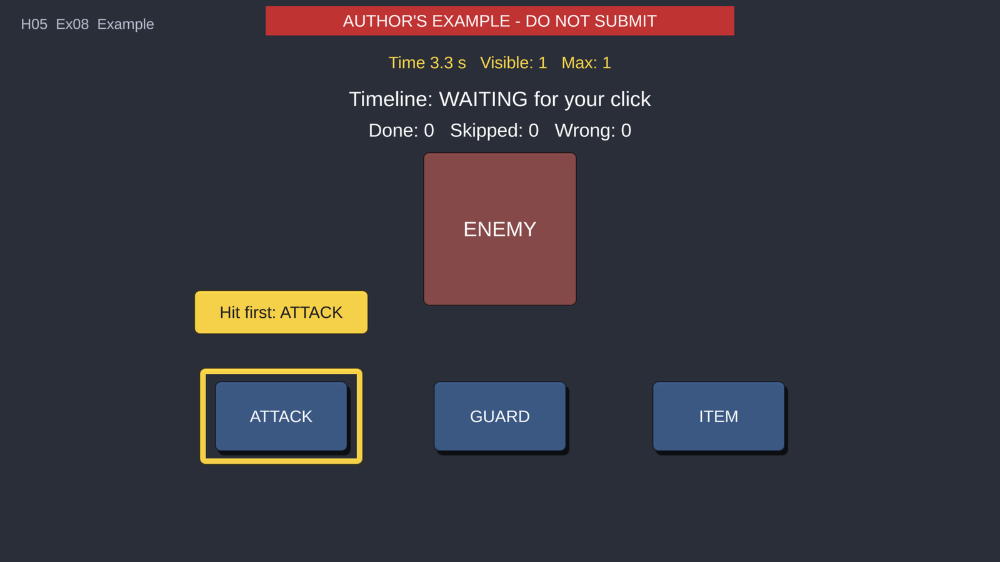
決め方の手がかり
- 案内は、プレイヤーが最初に困ることから、次に、最後に、の順に決めます
- 3 つのクリップは重ならないようにします（Max: 1 になります）
- 合計は 10 秒以内に収めます
Ex08_Example は見本です。提出には使えません。画面に AUTHOR'S EXAMPLE の帯が写った画像は 0 点です。前回の H04 でも、見本をそのまま提出する例が多くありました。提出するのは、あなたが Ex08_Start から作った自分のシーンです。
確認：Ex08_Example を開いて Play すると、案内が出るたびに止まり、合うボタンを押すと次の案内が出ることを確認します。
Ex08_Start を複製して、自分のシーンにする
Assets/Lessons/H05_GuideAttention/Scenes/Ex08_Start.unity ／ MyGuide_学籍番号
Ex08_Start はホーム画面で、QUEST・SHOP・PARTY・MAIL・MENU の 5 つのボタンと、まだ何も書かれていない 3 つの案内（Guide_A・B・C）があります。Timeline はまだありません。これを複製して、自分の名前をつけ、案内の順番と文を自分で決めます。
使うもの
- Guide_A・B・C：画面に置いてある 3 つの案内です。最初は隠れています（SetActive がオフ）
- NameTag：画面の上の「NAME: your student ID」の文字です。提出で自分のシーンだと分かるように、学籍番号に書き換えます
- Timeline の Create ボタン：Guide に Timeline のアセットと Playable Director をまとめて作ります
- VisibleCount：Readout の表示（Visible と Max）です
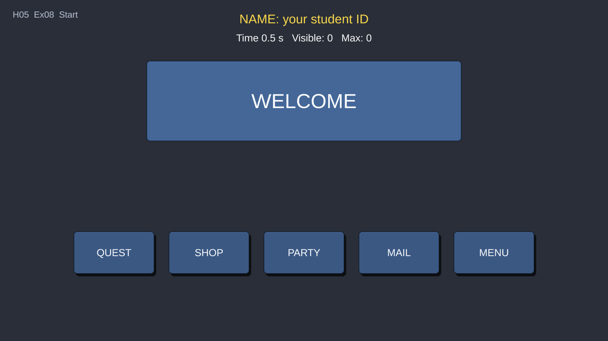
まず自分で考えて手を動かし、詰まったところでヒントを 1 つずつ開いてみましょう。最後のヒントまで開けば、完成まで進められます。
ヒント 1：何を作るのか
作るのは「自分のホーム画面の案内」です。プレイヤーがホーム画面で最初に困る順に、案内を 3 つ決めます。たとえば、最初に押してほしいボタン、次に押してほしいボタン、最後に気づいてほしいボタンです。
文は英語かローマ字で書きます。Ex08_Example は、同じことを作者が戦闘画面でやってみた一例です。見本の文や秒数を写すと、あなたのホーム画面とは食い違います。
10 秒以内に収めるのは、最初の 10 秒でプレイヤーに伝えることを絞るためです。3 つ全部を詰め込まず、強調は引き算という考え方を思い出します。
ヒント 2：Ex08_Start を複製して、名前を入れる
- Project ウィンドウで
Assets/Lessons/H05_GuideAttention/Scenesを開き、Ex08_Startを 1 回クリックして選びます - Cmd + D（Windows は Ctrl + D）を押して複製します。同じフォルダに、名前の末尾に番号の付いたシーンができます
- 複製したシーンの名前を
MyGuide_学籍番号に変えます（選んだ状態で Return、Windows は F2） - 複製したシーンをダブルクリックして開き、Hierarchy の一番上が
MyGuide_学籍番号になっていることを確かめます - Hierarchy で
Canvasの左の三角をクリックして開き、NameTagをクリックします - Inspector の Text の欄を、自分の学籍番号に書き換えます
確認は、Game ビューの上に自分の学籍番号が出ることです。
ヒント 3：案内の文を、自分のものにする
- Hierarchy で
Guide_Aをクリックします - Inspector の左上のチェックを入れて、案内を見えるようにします
- Guide_A の左の三角を開き、
Text (TMP)をクリックして、Inspector の Text の欄を、自分の案内の文（英語かローマ字）に書き換えます - Scene ビューで
Guide_Aを、教えたいボタンの上に動かします（枠のFrameは案内の下に付いてきます） Guide_Aを選び直し、Inspector の左上のチェックを外して、元の隠れた状態に戻します- Guide_B と Guide_C も同じように作ります
3 つの案内は、プレイヤーが最初に困る順に決めます。文は短く、1 つの案内に 1 つのことだけを書きます。
ヒント 4：Timeline を作って、案内をドラッグする
- Hierarchy で
Guideをクリックします - メニューバーの Window → Sequencing → Timeline をクリックします
- Timeline ウィンドウの Create ボタンをクリックします
- 保存先を
Assets/Lessons/H05_GuideAttention/Timelinesにして、名前にMyGuide_学籍番号と入力し、Save をクリックします - Hierarchy の
Guide_Aを、Timeline ウィンドウの左の空いている所へドラッグします - メニューが出たら Activation Track を選びます
Guide_BとGuide_Cも、同じようにドラッグして Activation Track にします
確認は、Activation Track が 3 本でき、トラックの名前が Guide_A・Guide_B・Guide_C になることです。
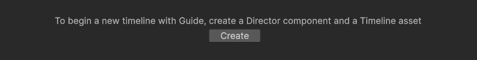
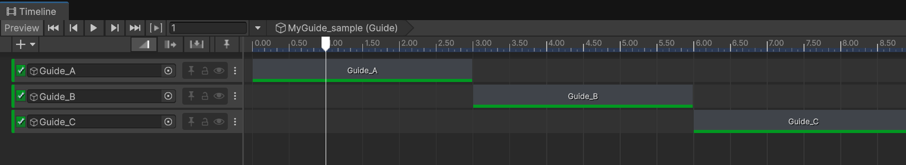
ヒント 5：Start と Duration を決めて、確かめる
- Guide_A のクリップをクリックし、Inspector の Clip Timing の Start と Duration の s の欄に、自分で決めた秒数を入力します
- Guide_B のクリップは、Guide_A が終わった後に始まるように、Start と Duration の s の欄を入力します
- Guide_C のクリップも、Guide_B が終わった後に始まるようにします
- 3 つのクリップが重ならず、全部で 10 秒以内に収まっていることを、Timeline ウィンドウで見ます
- 再生ヘッドをドラッグして、案内が 1 つずつ入れ替わるのを確かめます
- Cmd + S（Windows は Ctrl + S）で保存します
- Play ボタンを押し、上の表示が
Max: 1になることを確かめます
Max が 2 以上になるときは、2 つのクリップが重なっています。Start と Duration を見直します。余裕があれば、案内の Frame に Animator を付け、Controller に Ex01 で作った StartButton を入れて、枠を光らせます。H05Stop の印を置いて、押すまで止める形にしてもかまいません。
提出するスクリーンショット ②：Hierarchy のシーン名（MyGuide_学籍番号）、Timeline ウィンドウ（クリップ 3 本）、Game ビュー（NAME に自分の学籍番号、自分の文の案内が 1 つ出ている）が 1 枚に写るように、エディタ全体を撮ります。Play 中でも、Timeline のプレビュー中でもかまいません。
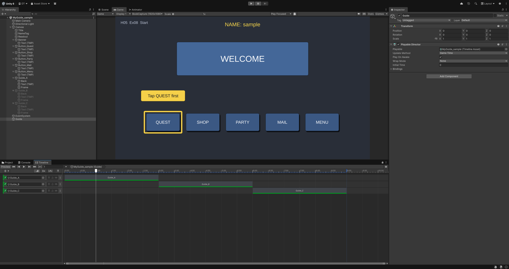
確認：自分のシーン MyGuide_学籍番号 で Play すると、上の表示が Max: 1 になり、NAME に自分の学籍番号、Game ビューに自分の文の案内が 1 つずつ出ることを確認します。
7. 注意の設計の現場
今日の作例は小さな画面ですが、同じ考え方は、実際のゲームでも使われています。ここでは、原理編 第5章で紹介されている事例から、HUD と、全部を光らせる画面の話を取り上げます。
HUD を引っ込める：God of War
『God of War』（2018 年版）には、設定で HUD を最小限にする没入モード（Immersion mode）があります。続編の『God of War Ragnarök』は、通常のプレイ中は HUD が隠れ、必要なときに現れる仕組みがあると、ゲームメディアが伝えています（公式の文書ではなく、報道に基づく情報です）。
Ex06 では、探索中の HUD を隠し、戦闘に入ったら出しました。出す技術と同じくらい、引っ込める技術が、画面の情報の量を決めます。プレイヤーが設定で選べる形にすることも、1 つの方法です。
全部が点滅するホーム画面
お知らせ、イベント、ガチャ、ログインボーナスのバッジが、同時に明滅しているホーム画面を思い浮かべてみましょう。作り手は全部を見てほしいのですが、プレイヤーには、どれを先に見ればよいかが分かりません。Ex02 は、これを探す秒数で確かめた作例です。
自分のホーム画面を作るときは、いちばん先に押してほしい所だけを立て、残りは静かにします。Ex08 で並べる 3 つの案内も、同じ考え方です。
見えているのに気づかない：見えないゴリラの実験
シモンズ（Simons）とチャブリス（Chabris）は、1999 年の実験で、パスの回数を数えている人たちの前を、ゴリラの着ぐるみが横切る映像を見せました。数えることに注意が向いていると、画面の真ん中を通ったゴリラに、気づかない人が多くいました。非注意性盲目（inattentional blindness）と呼ばれる現象です。
画面に情報があることと、プレイヤーがそれを見ていることは、別のことです。今日の作例で、案内を 1 つずつ出して、押すまで止めたのは、見えているだけで終わらせないためです。
出典：原理編『UnityDesignPrinciples』第5章。実験は Simons, D. J., & Chabris, C. F. (1999). Gorillas in our midst. Perception, 28(9), 1059–1074。保てる量の話は Cowan, N. (2001), Behavioral and Brain Sciences, 24(1), 87–114 と Miller, G. A. (1956), Psychological Review, 63(2), 81–97。God of War の没入モードは PSU と WCCFTech の記事、Ragnarök の HUD は GAMERANT の記事（二次資料）によります。
8. 提出とフォーム
提出物は 2 つで、両方そろって提出完了です（合計 100 点）。授業の途中で、数字を書き留めておくと、あとの記入が楽になります。
1. スクリーンショット 2 枚をファイルで添付（40 点）
Classroom の課題に、スクリーンショットをファイルとして添付します。外部サイトのリンクにはしません。撮影は、macOS なら Shift + Cmd + 4、Windows なら Win + Shift + S で範囲を選びます。
| 提出物 | 点 | 写すもの |
|---|---|---|
| ① | 20 | Ex05_SignalStop のエディタ全体。Timeline ウィンドウ（Signal Receiver のトラックに Signal Emitter 3 つ）と Game ビュー（Done: 3 Skipped: 0）が 1 枚に一緒に写っていること。Title が「H05 Ex05 Signal Stop」であること（Ex05_Done は 0 点） |
| ② | 20 | 自分のシーン MyGuide_学籍番号 のエディタ全体。Hierarchy のシーン名、Timeline ウィンドウ（クリップ 3 本）、Game ビュー（NAME に自分の学籍番号、自分の文の案内が 1 つ出ている）が 1 枚に写っていること |
AUTHOR'S EXAMPLE の帯が写った画像は 0 点です。Ex08_Example は見本なので、提出する画像に写らないようにします。
2. 演習記録フォーム 3 問（60 点、各 20 点）
Classroom の課題に添付されたフォームに答えます。3 問は三つの層に対応していて、授業中に書き留めた数字を、自分の言葉で結びます。
| 問 | 層 | 書くこと |
|---|---|---|
| ① | 体験の層 | Ex02 の Avg（オン・オフ）と点滅するアイコンの数、Ex03 の Miss（オン・オフ）。この結果から、自分が遊んだゲームの画面で、何を 1 つに絞るとよいか |
| ② | 情報の層 | Ex04 で Start を変えたときの Max の変化、Ex05 で 1.5 以外の秒数に印を置いたときの見え方、Ex06 の HUD Alpha の変化と、隠すと何の負荷が減ると思うか |
| ③ | 見た目の層と、やってみよう | Ex07 で自分で決めた Dim・Max Scale・Period と見え方、自分の案内 A・B・C の順番と Start・Duration・文、最初に A を出した理由 |
記入のときの注意を 3 つ書いておきます。
- 秒数や数は、自分の画面に出た値を、そのまま書きます。Ex02 の Avg や Ex03 の Miss が下がらなかったときも、その数字を書き、なぜだと思うかを書きます
- Ex07 は、1.05 / 2 / 0.6 以外の、自分で決めた組を 1 つ必ず書きます
- フォームの記入例は、見本のシーン（Ex08_Example）の値と、作り話の秒数で書いてあります。記入例と同じ秒数・同じ文・戦闘画面の案内は 0 点です。自分のホーム画面とは、必ず食い違います
| 作例 | 授業中に書き留めておく値 |
|---|---|
| Ex02 | Avg（Blink All オン・オフ） |
| Ex03 | Miss（Teach All オン・オフ） |
| Ex04 | Guide_2 の Start（0 → 2）、Max（3 → 1） |
| Ex05 | 試した印の Time と、案内の残り方 |
| Ex06 | HUD Alpha（EXPLORE と BATTLE、オフとオン） |
| Ex07 | 自分で決めた Dim・Max Scale・Period と、見え方 |
| Ex08 | 自分の案内 A・B・C の Start・Duration・文 |
9. まとめ
今日は、プレイヤーの注意を、見つけやすさ・覚えやすさ・出す順番・止まる所・強さに分けて、別々の数字で調整しました。
- 準備（Animation Clip・Animator・Timeline）：動きは、録画で作ってもコードで作っても、Scale を変えているだけです。Timeline が使えることを、最初に確かめました。
- 体験の層（Blink All・Teach All）：動くものが 9 個あると探す時間が延び、6 つを一度に教えると間違いが増えます。強調は引き算で、教えるのは使う場面の直前に 1 つずつです。
- 情報の層（Activation Track・Signal・Hide In Explore）：案内は Start をずらして 1 つずつ（Max: 3 → 1）出し、Signal で案内が出たところに止まり、押すと続きが流れる形にしました。いま要らない HUD は隠します（HUD Alpha 1.00 → 0.00）。
- 見た目の層（Dim・Max Scale・Period）：まわりを暗くすれば（Dim 0.6）、動きを小さくゆっくり（x1.05・2 秒）しても、QUEST は目に入ります。何度も見る画面ほど、強すぎない演出にします。
案内を出す順番と止める所を決めるのは、プレイヤーが最初に困ることから考える作業でした。自分のホーム画面で並べた 3 つの案内も、その順になっているかを、もう一度見直してみましょう。